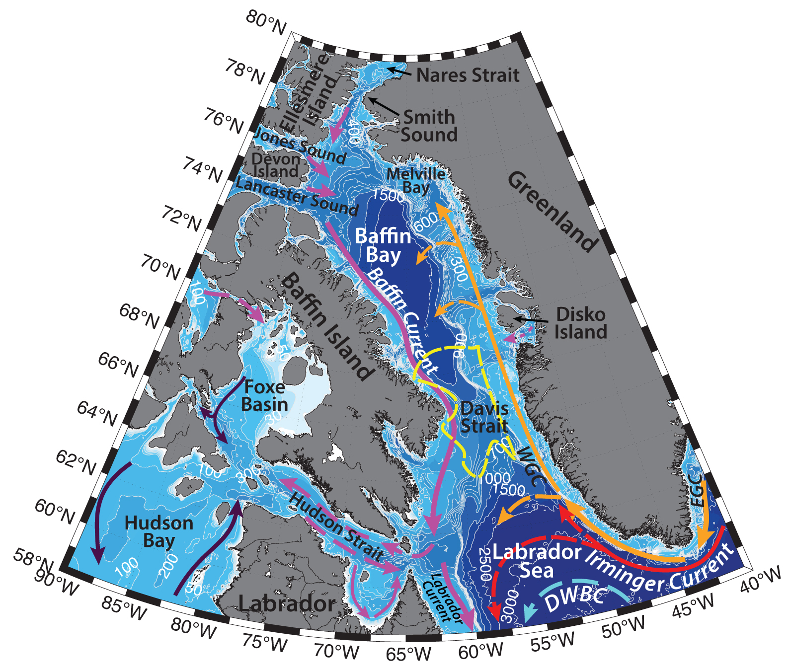

Schematic water circulation patterns and geographical place names in the Davis Strait region. Adopted from Muench (1970), Melling et al. (2001), Cuny et al. (2002), Tang et al. (2004), Seidenkrantz, (2013). Dashed yellow line marks the studied region.
Davis Strait is a strait between Baffin Island and Greenland, which connects the Baffin Bay with the Labrador Sea. The strait is ~950 km wide and has a sill of ~650 m. Baffin Bay is a marginal sea of the Arctic Ocean, with maximum depth greater than ~2300 m. The Bay is connected to the Arctic Ocean via Nares Strait (with sill depth of ~250 m), Jones Sound (with sill depth of ~120 m) and Lancaster Sound (with sill depth of ~125 m. Hydrography of the Baffin Bay and Davis Strait region is determined by the sea-ice, recurring North Water Polynya, inflow of both Arctic and Atlantic waters, atmospheric forcing, icebergs from the west coast of Greenland, local upwellings and tides.
General circulation of the Baffin Bay is predominately cyclonic, characterized by an advection of relatively warm water through Davis Strait along Greenland coast (West Greenland Current), an inflow of Arctic Water through Smith, Lancaster and Jones Sounds and a broad outflow of cold water on the western side of the Bay southwards along the Baffin Island coast (Baffin Current). Tang with coauthors (2004) have described, that the strength of the currents varies both spatially and seasonally from region to region. As such, for example, except for the Davis Strait, southwestern Baffin Bay and mouth of Lancaster Sound, the flow generally increases with depth. In the vicinity of Davis Strait, the current field is strongly affected by the topography (Tang et al., 2004). Below the mixed layer, the strongest inflow and outflow are both on the Greenland side of the strait separated by only 35 km. Overall, currents tend to be stronger during summer and fall at all depths, compared to winter and spring. Such structure can be explained by either seasonal variations of inflows from the northern straits, or larger transports of the Labrador Sea gyre in fall and winter, or the seasonal density structure of Baffin Bay and Davis Strait. Tang with coauthors (2004) documented the largest seasonal current variability along the Baffin Island slope and in Lancaster Sound.
The West Greenland Current (WGC; T ∼ −1.8°C, S ≤ 34.5; e.g. Cunny et al., 2002, 2005) carries cold, low-salinity Polar surface water from the East Greenland Current (EGC) and relatively ‘warm’ and saline Atlantic subsurface water from the Irminger Current (IC) northwestwards along the western Greenland shelf and shelf break with a transport of roughly 3 Sv (Sv ≡ 106 m3s−1) measured at Cape Farewell (e.g. Cuny et al., 2002). On its way northwards, it also collects freshwater and icebergs from the Greenland Ice Sheet (Seidenkrantz, M.-S., 2013). While WGC is thought to transport heat and salt into northern Baffin Bay (Melling et al., 2001), it is unclear, how far north the current can propagate, due to the lack of in-situ measurements in the Baffin Bay. Some studies (e.g. Loder et al., 1998) suggest, that it can flow north up to about 75°N, where it turns cyclonically around the Baffin Bay and joins the Baffin Current. Using a three-dimensional circulation model Tang with coauthors (2004) calculated, that in the vicinity of 66°N part of the inflow from the West Greenland current in the upper layer of eastern Davis Strait reverses its direction and is advected back around the Labrador Sea. However, at 500 m depth, the inflow is much weaker and the southward counter current is evident from the model results of Tang et al. (2004). According to this research, the mentioned outflow originates on the Greenland slope inside the Baffin Bay and flows along the 2000 m isobath. Cunny with coauthors (2002) have reported, that based on the surface drifters, as well as the deep floats, the shallow West Greenland Current significantly slows around 62°N where the slope decreases as the 3000-m and 2000-m isobaths curve westward.
The warmer and saltier Irminger Sea Water (ISW; T ∼ 4.5°C, S ∼ 34.95 psu) is advected underneath the colder WGC. It is the remnant water from Gulf Stream, advected in the Irminger Current along the Subpolar Gyre. Its transport has been estimated to be ~ 11 Sv in the Labrador Sea (Clarke, 1984).
The Baffin Current carries the Arctic outflow from the Canadian Arctic Archipelago southwards. In northwestern Baffin Bay it occupies the entire water column, to a depth of 500 m (Melling et al., 2001). This cold and relatively fresh water is advected along the Baffin Island coast and, further joins the Labrador Current – flwoing along the Labrador Peninsula down to Newfoundland (Seidenkrantz, 2013). The thermohaline circulation of the North Atlantic Ocean is sensitive to the volume and freshwater transport from Arctic Ocean, as Arctic waters freshen the surface, stabilizing the water column and thus reduce the rate of deep-water formation in the Labrador Sea (Tang et al., 2004).
The volume transport of the inflow through the three northern channels into the Baffin Bay (Nares Strait, Jones Sound and Lancaster Sound) is ~0.7–2.1 Sv (the freshwater transport is ~ 920–1460 km3/year; Tang et al., 2004). The estimations of volume transport out of Davis Strait vary from ~2.6 Sv (Tang et al., 2004) to ~ 3.3–4.6 Sv (with freshwater transport (relative to 34.8) of 120–150mSv; Cuny et al., 2005; not including the Greenland Shelf transport in both cases). Part of this outflow (approximately 25% of the volume) heads into the Hudson Strait, while the rest merges into the Labrador Current (Straneo and Saucier, 2008). As estimated by Cuny et al. (2005) the northward Greenland Shelf transport is ~0.8 Sv.
Baffin Bay is partially ice-covered most months of the year, except for August and September, with the maximum ice coverage in February – March (e.g. Seidenkrantz, 2013). During summertime ice disappears quickly in the eastern part of the Baffin Bay due to relatively warm West Greenland Current, while in the western and central parts of the bay ice remains much longer, as a consequence of the cold Arctic Water at the surface. Baffin Current at the western margin of the bay also transports ice southwards along the Baffin Island shore towards the Davis Strait. During cold season ice thickness also tends to decrease towards Greenland (e.g. Tang et al., 2004; Seidenkrantz, 2013). During the annual ice retreat, phytoplankton blooms are commonly observed at the ice edge. Though they are generally short-lived, they have a substantial impact on the ecosystem, providing food for the benthic communities in the region (Seidenkrantz, M.-S., 2013)
Glaciers of the west coast of Greenland north of 68 ºN (e.g. Jakobshavn Isbrae ice massif) produce around 1015 kg/year of icebergs, especially in the Disko and Umanak bays (south and north of Disko Island, respectively). No icebergs of significant size are produced by glaciers of the Canadian Archipelago. In general, icebergs with mass greater than 1 million tons tend to drift north, while smaller icebergs tend to drift south- and southeastwards. As icebergs reach the relatively warm Atlantic Waters, while carried southward by the Labrador Current, they melt. Some may reach as far as the Grand Banks (Tang et al., 2004).
During wintertime northerly winds and southward flowing current form the North Water Polynya – a latent heat recurrent polynya in the Northern Baffin Bay and Smith Sound region (e.g. Muench, 1970; Melling et al., 2001). It usually starts to form in winter, often combining a number of leads across the region, and gets to the largest ice-free area in June. The North Water Polynya region is fed by a cold inflow from the Arctic Ocean that flows southward through Smith Sound, however an ice ridge in the Nares Strait prevents ice from the north entering the region (Melling et al., 2001). Polynya is thought to also be sustained by the upwellings of oceanic heat near the Greenland coast in late spring. Ice formed in the North Water Polynya gets entrained into the Baffin Current and can travel southwards into the Labrador Sea (Tang et al., 2004).
Three water masses are usually identified in the Baffin Bay: Arctic Water, West Greenland Intermediate Water and Baffin Bay Deep Water (e.g. thesis of Muench, 1970; Tang et al., 2004). Cold and fresh Arctic Water (-1.8<T<0ºC, S from <31 up to 34.4; Muench, 1970) can be of Atlantic, Arctic, runoff and even Pacific origin, formed by surface cooling and freshening, but mainly advected from the northern straits and Canadian Archipelago. It can extend down to 100 – 300 m depth. Intermediate water mass is more saline and relatively warm (0<T<2ºC, 34.2<S<34.5), it is of Atlantic origin and is advected in the deeper water of the West Greenland Current from the Davis Strait northwards and extends down to 600-1300 m. The temperature maximum of this layer is lowered as the water circulates around Baffin Bay and mixes with adjacent waters. Below 1200 m in the central Baffin Bay cold Baffin Bay Deep Water is found (-0.4<T<0ºC, S ~ 34.48; Tang et al., 2004). The origin of this water is still debatable. Since the region is ice covered during most of the year, the ocean is isolated from cold winter air and air-sea heat fluxes are reduced. As such, various authors (e.g. Muench, 1970; Tang et al., 2004) argue, that in the Baffin Bay winter convective overturning doesn’t penetrate deeper than 100 m. However, convective mixing can reach the bottom over the shallow shelves, from where it can cascade down the slope to the deeper parts of the Baffin Bay.
Seasonality of hydrographic parameters in the Baffin Bay is rather small, except in Davis Strait and the shelf regions in northern Baffin Bay and the mouth of Lancaster Sound. Temperatures in the eastern part of Davis Strait reflect on the seasonal variations of the temperatures of the West Greenland Current: maximum occurs in winter, while minimum – in summer. The annual temperature cycles in the upper and lower layers are out of phase (Tang et al., 2004).